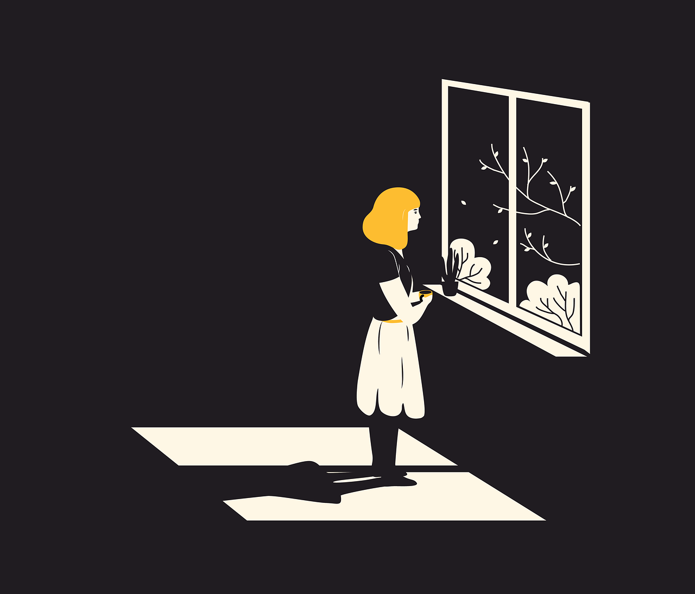

Somos uma equipe comprometida em oferecer apoio e orientação para aqueles enfrentando a depressão. Guiados pela empatia, nossa missão é ser um farol de esperança, proporcionando recursos práticos e um ambiente seguro para compartilhar experiências. Nossa equipe inclui profissionais de saúde mental dedicados a criar uma comunidade inclusiva e acolhedora. Valorizamos a singularidade de cada jornada, buscando empoderar indivíduos por meio de informação, aconselhamento online e grupos de apoio. Respeitamos a confidencialidade, garantindo um ambiente livre de julgamentos.
A depressão é um transtorno mental caracterizado por uma persistente sensação de tristeza, falta de interesse ou prazer em atividades cotidianas. Pode afetar a maneira como uma pessoa pensa, sente e lida com atividades diárias. Os sintomas da depressão podem variar, mas geralmente incluem mudanças no sono e no apetite, fadiga, sentimentos de desesperança, dificuldade de concentração e pensamentos autodepreciativos.
É importante reconhecer que a depressão não é simplesmente um estado de tristeza passageira, mas uma condição médica séria que requer atenção e tratamento. Pode impactar significativamente a qualidade de vida e, em alguns casos, levar a complicações graves.
A batalha contra a depressão pode ser árdua e desafiadora, mas é importante lembrar que a busca por ajuda não é sinal de fraqueza, mas sim de coragem e autocompaixão. A depressão é uma condição séria que afeta milhões de pessoas ao redor do mundo, e é fundamental entender que não estamos sozinhos nessa jornada, clique em cvv abaixo para obter ajuda.